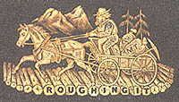

| At the start of Chapter 62, MT briefly tells the story of
how in 1866 he wound up satisfying his "vagabond instinct" by
getting "a new berth and a delightful one" as a correspondent
to the Sandwich Islands for the Sacramento
Union. He stayed four months in the Islands (from March to June, 1866), writing twenty-five letters for the Union that were published between April and November. His reports were widely read, and he may have tried revising them into a book in 1866-1867, even before the Quaker City excursion to Europe. He hadn't planned to use the Hawaiian experience in Roughing It, but he ran out of inspiration and material before reaching the length Bliss and subscription readers were expecting. Working either from his own scrapbook copies of the Union letters, or possibly from a book manuscript based on them that is now lost, he wound up using parts of thirteen letters in the fifteen Hawaiian chapters of Roughing It.  You can read four representative letters here, along with an interactive feature that will allow you to compare his 1866 newspaper reportage with his 1872 book: clicking on the ROUGHING IT ICON (left) whenever you see it will bring up a side-by-side comparison of the two texts, so you can see for yourself the kinds of revisions MT made. He relied heavily on the letters, but there are some patterns to be noticed in his revisions. It's especially interesting to see what he decided to omit, including kinds of humor that may have struck him as too coarse for a national book-buying audience. The biggest omission is the disappearance of "Mr. Brown." He was a figure whom MT's original newspaper readers knew well, accompanying MT to Europe in the Alta letters of 1867 as well as to the Sandwich Islands in these Union letters. "Mr. Brown" was (like "Mark Twain") an imaginary persona, less inhibited, more irascible, cruder than "Mark Twain" even at this early stage in his career. Some readers may regret his absence from MT's first two travel books. |